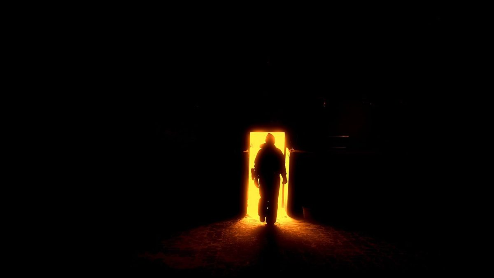

門鎖妖怪：多爾
2018-01-15

多爾是寄居在門鎖上的妖怪，擁有控制開關門的能力。
〈門鎖妖怪：多爾〉
「咿呀——」
門悄悄開了個小縫，嘩啦啦水柱和女人的哼歌聲環繞整間浴室，過了好一會兒，女人光溜溜的身子打了個顫，這才發現冷風從門縫溜了進來。
「奇怪，剛不是有鎖嗎？」頂著滿頭泡沫，女人嘟囔著把門關好，又繼續一個人的演唱會。
「就這樣？」真令人失望的反應。身為一個寄居在門鎖上，只能控制開關門的妖怪，真的很難有什麼作為。多爾想起幾天前熱水器罷工時，女人一開水就冷得尖叫的模樣，心裡不住地羨慕。
穿好衣服的女人走出熱氣蒸騰的浴室，接起響個不停的手機，提高音量喊著：「不要再打電話來了！我跟你已經分手了，聽懂嗎？我不是你女朋友了！你也別再來找我！」接著把手機一丟，坐在鏡子前忿忿地往臉上抹保養品。
躺在沙發上的手機對多爾扮了個鬼臉，「可惡，就連一支手機都比我會整人。」多爾心想，自己真是個沒用的妖怪，開開關關門有屁用啊。
吹乾頭髮的女人檢查了一下大門鎖，又扣上防盜拴，便拿起手機窩到床上去了，只剩小夜燈的套房裡輕輕響起鼾聲。
一天又這麼過去了，多爾覺得好無聊。
正想去找瓦斯爐串門子時，祂突然發現女人家門外站了一個人，穿得一身黑，戴著鴨舌帽和口罩，手裡握著一根用報紙包的東西，正死盯著門上的貓眼。
多爾忍不住興奮起來，直覺告訴祂，這次絕對是個成功的惡作劇！於是祂一邊竊笑一邊伸出觸手輕輕撤下防盜拴，喀啦喀啦轉開門鎖。
「咿呀——」大門悄悄打開了，女人的鼾聲依舊平靜得像一艘船。
妖怪就在你身邊！
故事柑仔店，與您一同蒐集
居家妖怪圖鑑。